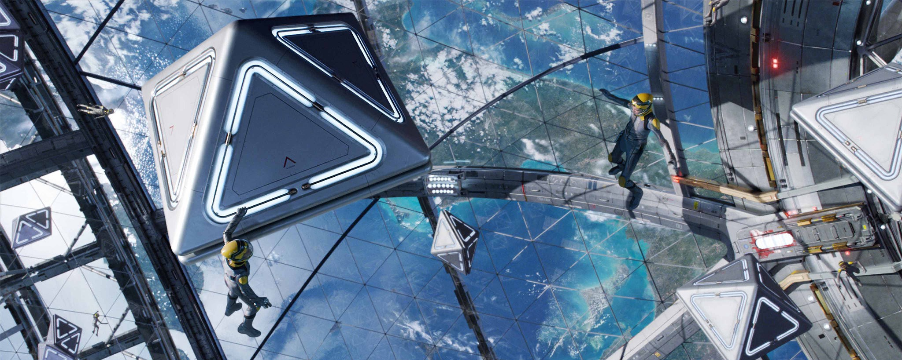

At Cosmic Oasis, we have a wide range of unique sports found nowhere else. Challenge your instincts with Zero-Gravity Frisbee, lose yourself in a multi-level laser tag arena with no floors or ceilings, or step into Spaceball; our signature zero-gravity sport where the ball moves in any direction, goals exist at every angle, and the rules of gravity no longer apply.